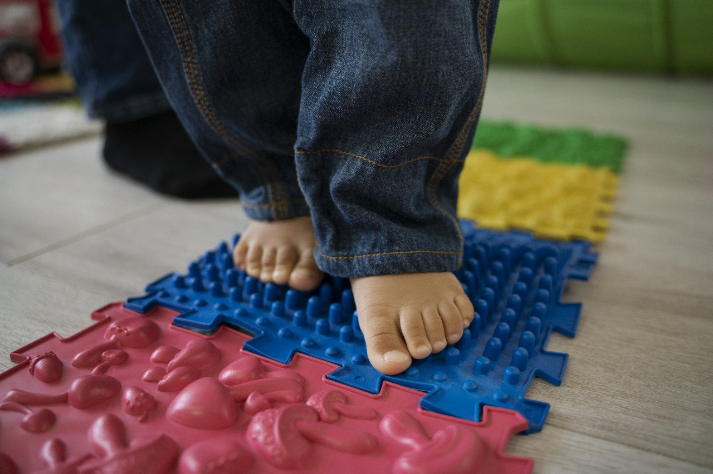
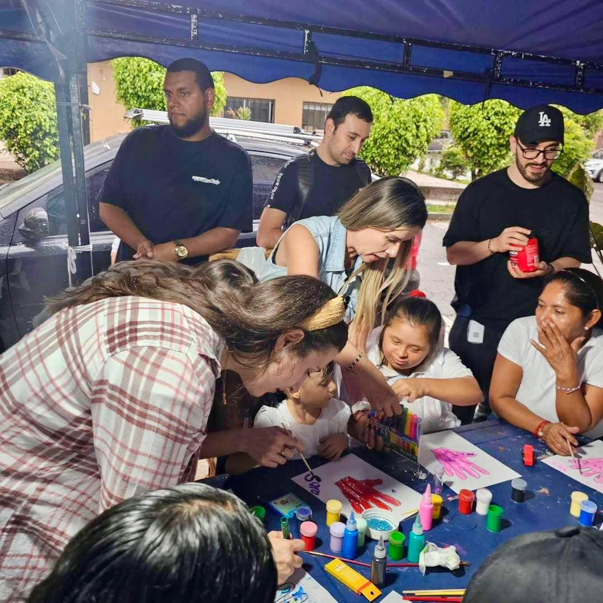
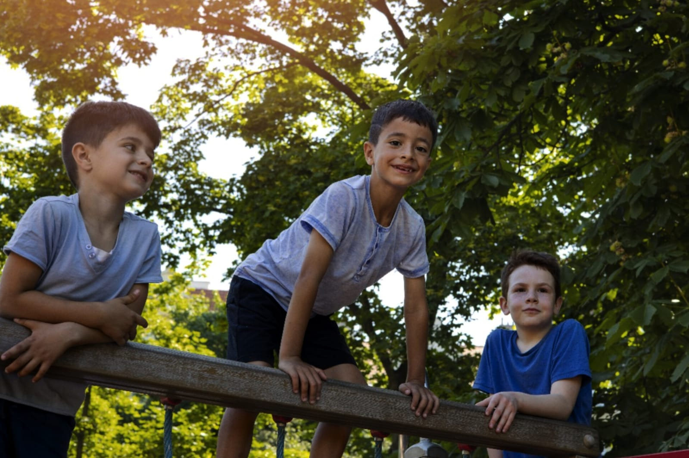
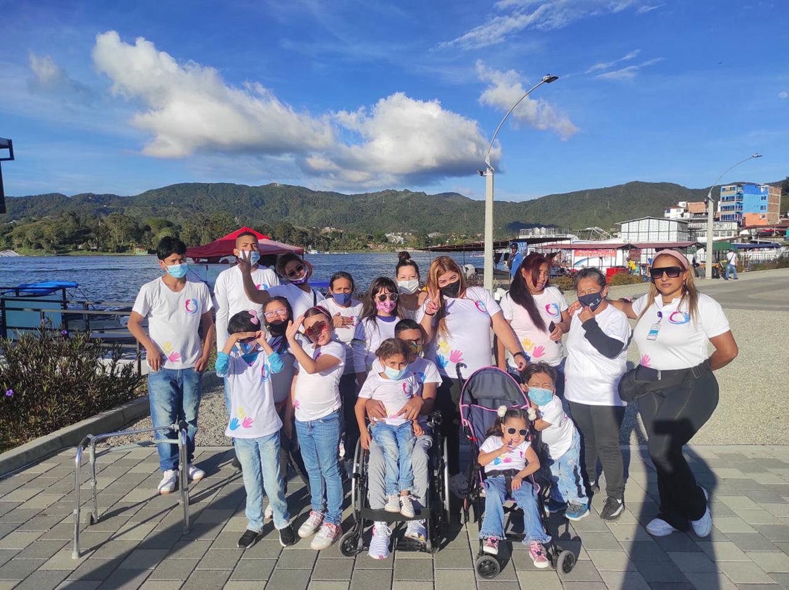

Salud
La fundación promueve el bienestar de niños, niñas y familias a través del apoyo nutricional y la rehabilitación física.
Ofrece alimentos equilibrados y terapias como fisioterapia y fonoaudiología, fortaleciendo la movilidad y la calidad de vida de los beneficiarios

Educación
Aun en el siglo XXL, las personas con discapacidad enfrentan grandes barreras para acceder a una educación inclusiva, equitativa y de calidad,
lo que genera altos índices de analfabetismo, deserción escolar y limita significativamente sus oportunidades de desarrollo personal, social y profesional.

Recreación
Las actividades recreativas y deportivas generan beneficios significativos en las personas con discapacidad, fortaleciendo sus capacidades físicas, intelectuales y emocionales.
Mejoran las funciones respiratorias, cardiovasculares y renales, además de promover la autoestima y el bienestar integral.

Realización de Sueños
En la fundación Unidos por la Vida creemos en avivar la chispa de la vida y demostrar que los sueños pueden cumplirse,
gestionando recursos y uniendo fuerzas para apoyar los proyectos y experiencias significativas de nuestros beneficiarios.